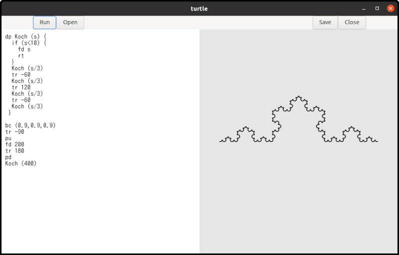

Tiny Turtle Graphics Interpreter
The Turtle program is an example that combines TfeTextView and GtkDrawingArea objects. It is a very small interpreter, but it allows you to draw fractal curves. The following diagram illustrates a Koch curve, which is a well-known fractal curve.

The following image displays a snowflake curve, which consists of six Koch curves.

The Turtle program uses Flex, a lexical analyzer, and Bison, a parser generator. These are open-source alternatives to Lex and Yacc, which were proprietary tools developed at Bell Labs. Because this section focuses mainly on these tools rather than GTK, feel free to skip it.
How to Use Turtle
You can find The Turtle documentation here. Here is a simple example.
fc (1,0,0) # Foreground color is red, rgb = (1,0,0).
pd # Pen down.
rp (4) { # Repeat four times.
fd 100 # Go forward by 100 pixels.
tr 90 # Turn right by 90 degrees.
}- Compile, install, and run
turtle(See the documentation above for details). - Type the program above into the editor on the left pane of the window.
- Click the
Runbutton. A red square with 100-pixel sides will appear on the right pane of the window.
You can draw other shapes and curves using a similar
approach. The Turtle documentation includes examples of fractal
curves, such as a tree, a Koch curve, and a square Koch curve.
The source code for these examples is located in the /src/turtle/example
directory. You can load these files into the turtle
editor by clicking the Open button.
Combining TfeTextView and GtkDrawingArea
Turtle uses TfeTextView and GtkDrawingArea. Here is how they interact:
- The user types or loads a Turtle program into the TfeTextView buffer.
- The user clicks the “Run” button.
- The parser reads the code and generates a data tree.
- The interpreter executes this data step by step, drawing shapes onto a separate, off-screen surface rather than directly onto the GtkDrawingArea widget.
- The widget is then queued for a redraw. A drawing function is triggered, which simply copies the off-screen surface onto the GtkDrawingArea.

The core of the interpreter is written using flex and bison.
Because this code is not thread-safe, the run_cb
callback function—which handles the “clicked” signal for the
“Run” button—prevents re-entrancy.
void
run_cb (GtkWidget *btnr) {
GtkTextBuffer *tb = gtk_text_view_get_buffer (GTK_TEXT_VIEW (tv));
GtkTextIter start_iter;
GtkTextIter end_iter;
char *contents;
int stat;
static gboolean busy = FALSE; /* initialized only once */
/* yyparse() and run() are NOT thread safe. */
/* The variable busy avoids reentrance. */
if (busy)
return;
busy = TRUE;
gtk_text_buffer_get_bounds (tb, &start_iter, &end_iter);
contents = gtk_text_buffer_get_text (tb, &start_iter, &end_iter, FALSE);
if (surface && contents[0] != '\0') {
init_flex (contents);
stat = yyparse ();
if (stat == 0) { /* No error */
run ();
}
finalize_flex ();
}
g_free (contents);
gtk_widget_queue_draw (GTK_WIDGET (da));
busy = FALSE;
}
static void
resize_cb (GtkDrawingArea *drawing_area, int width, int height, gpointer user_data) {
if (surface)
cairo_surface_destroy (surface);
surface = cairo_image_surface_create (CAIRO_FORMAT_ARGB32, width, height);
run_cb (NULL); // NULL is a fake (run button).
}- 8, 12-14: The static variable
busytracks the status of the interpreter. If it isTRUE, the interpreter is already running and cannot be called again, as the code is not re-entrant. If it isFALSE, it is safe to call the interpreter, at which pointbusyis set toTRUE. - 15-16: Retrieves the contents of
tb. - 17-27: The static variable
surfacepoints to acairo_surface_tinstance. Because it is created when the GtkDrawingArea is realized and recreated upon resizing, it should always be non-NULL at this stage. However, as a safety check, if it isNULL, the interpreter will not be called. - 17-24: If
surfaceis notNULLandcontentsis not an empty string, the interpreter is invoked to perform the following steps:- Initializes the lexical analyzer.
- Calls the parser, which analyzes the program’s syntax and generates a data tree.
- If parsing is successful, it calls the
runruntime routine. - Finalizes the lexical analyzer.
- 25: Frees
contents. - 26: Queues the drawing area widget for a redraw.
- 27: Sets
busyback toFALSE. - 30-36: The “resize” signal handler. If
surfaceis not NULL, it is destroyed. A new surface is then created to match the dimensions of the GtkDrawingArea, and therun_cbcallback is called to redraw the shapes.
TfeTextView has been updated to include a “change-file”
signal, which is emitted whenever its GFile changes. For details
on how to create and emit signals on an object, please refer to
the GObject
Tutorial. The updated TfeTextView files
(tfetextview.h and tfetextview.c) are
located in the turtle
directory.
When the “Open” button is clicked and a file is loaded, the filename is displayed in the header bar.
static void
show_filename (TfeTextView *tv) {
GFile *file;
char *filename_bin, *filename_utf;
char *title;
/* The instance (TfeTextView) holds the ownership of the returned GFile. */
file = tfe_text_view_get_file (tv);
if (G_IS_FILE (file)) {
filename_bin = g_file_get_basename (file);
filename_utf = g_filename_display_name (filename_bin);
title = g_strdup_printf ("Turtle (%s)", filename_utf);
g_free (filename_bin);
g_free (filename_utf);
} else
title = g_strdup ("Turtle");
gtk_window_set_title (GTK_WINDOW (win), title);
g_free (title);
}This is the callback for the “change-file” signal on the TfeTextView instance.
- It calls
tfe_text_view_get_file. - If it returns a GFile instance, the title is set to “Turtle (filename)”.
- Otherwise, the title defaults to “Turtle”.
- Note that
g_file_get_basenamedoes not necessarily return a UTF-8 string; therefore, the return value must be converted to UTF-8 usingg_filename_display_name.
The rest of turtleapplication.c is very simple
and similar to the code in earlier sections. The complete source
code for turtleapplication.c can be found in the turtle
directory.
What Does the Interpreter Do?
Suppose the turtle application runs the following program:
distance = 100
fd distance*2The application processes the program as follows:
- Generally, a program consists of tokens. In the example above, the tokens are “distance”, “=”, “100”, “fd”, “*” and “2”.
- The parser calls the
yylexfunction to read each token from the source file.yylexreturns a code representing the “token kind” and sets a global variable,yylval, to what is called a semantic value. Theyylvalvariable is a union type. The types ofyylval.IDandyylval.NUMare string and double, respectively. Since there are seven tokens in the program,yylexis called seven times:
| token kind | yylval.ID | yylval.NUM | |
|---|---|---|---|
| 1 | ID | distance | |
| 2 | = | ||
| 3 | NUM | 100 | |
| 4 | FD | ||
| 5 | ID | distance | |
| 6 | * | ||
| 7 | NUM | 2 |
- While
yylexreturns a token kind on every call, it does not always setyylval.IDoryylval.NUM. This is because keywords (FD) and symbols (=and*) do not have semantic values. - The
turtleapplication then constructs a tree data structure using its internal parser.

turtleanalyzes the tree (shown in the image above) and executes it. This part of the application is called the runtime routine or interpreter. The tree consists of rectangles and line segments between the rectangles. The rectangles are called nodes. For example,N_PROGRAM,N_ASSIGN,N_FD, andN_MULare nodes.- The interpreter goes down from
N_PROGRAMtoN_ASSIGN. - The
N_ASSIGNnode has two children,IDandNUM. This node comes fromdistance = 100, which isID = NUMsyntactically. First,turtlechecks if the first child is anID. If it is,turtlelooks for the variable in the variable table. If it does not exist, it registers theID(distance) to the table. It then goes back up to theN_ASSIGNnode. turtlecalculates the second child. In this case, it is the number100. It saves100to the variable table at thedistancerecord.turtlegoes back toN_PROGRAM, then goes to the next node,N_FD. This node has only one child. The interpreter goes down to the childN_MUL.- The first child is an
ID(distance).turtlesearches the variable table for the variabledistanceand gets the value 100. The second child is the number 2. It multiplies 100 by 2 and gets 200.turtlethen goes back toN_FD. - Now
turtleknows the distance is 200. It moves the cursor forward by 200 pixels. The segment is drawn on the surface. - There is no following node. The runtime routine returns to
the function
run_cb.
- The interpreter goes down from
- The function
run_cbcallsgtk_widget_queue_drawand puts the GtkDrawingArea widget into the queue. - The system redraws the widget. At that time, the drawing
function
draw_funcis called. The function copies thesurfaceto the surface in the GtkDrawingArea.
An actual turtle program is more complicated
than the example above. However, what turtle does
is basically the same. Interpretation consists of three
parts:
- Lexical analysis
- Syntax parsing and tree generation
- Interpretation and execution of the tree
Compilation Flow
The source files are:
- flex source file:
turtle.lex - bison source file:
turtle.y - C header file:
turtle_lex.h,tfetextview.h - C source file:
turtleapplication.c,tfetextview.c - Other files:
turtle.ui,turtle.gresource.xml, andmeson.build
The compilation process involves several steps, as illustrated in the diagram below:
glib-compile-resourcescompilesturtle.uiintoresources.cand generatesresources.h, according to the rules inturtle.gresource.xml.bisoncompilesturtle.yintoturtle_parser.cand generatesturtle_parser.h.flexcompilesturtle.lexintoturtle_lex.c.- The C compiler and linker process
turtleapplication.c,tfetextview.c,resources.c,turtle_parser.c, andturtle_lex.c, alongside their respective headers (tfetextview.h,resources.h,turtle_parser.handturtle_lex.h), to generate theturtleexecutable file.

Meson controls this entire process. The instructions are
defined in meson.build:
project('turtle', 'c')
compiler = meson.get_compiler('c')
mathdep = compiler.find_library('m', required : true)
gtkdep = dependency('gtk4')
gnome = import('gnome')
resources = gnome.compile_resources('resources','turtle.gresource.xml')
flex = find_program('flex')
bison = find_program('bison')
turtleparser = custom_target('turtleparser', input: 'turtle.y', output: ['turtle_parser.c', 'turtle_parser.h'], command: [bison, '-d', '-o', 'turtle_parser.c', '@INPUT@'])
turtlelexer = custom_target('turtlelexer', input: 'turtle.lex', output: 'turtle_lex.c', command: [flex, '-o', '@OUTPUT@', '@INPUT@'])
sourcefiles=files('turtleapplication.c', 'tfetextview.c')
executable('turtle', sourcefiles, resources, turtleparser, turtlelexer, turtleparser[1], dependencies: [mathdep, gtkdep], export_dynamic: true, install: true)- 1: Defines the project name as “turtle” and the programming language as C.
- 3: Retrieves the C compiler, which is typically
gccon Linux. - 4: Locates the math library. Because this program uses
trigonometric functions, it requires the math library. While
included via
#include <math.h>in the source code, it must also be explicitly linked during the build process. - 6: Locates the
gtk4library dependency. - 8: Imports the GNOME module. See the Meson build system website – GNOME module for further information.
- 9: Compiles the UI file into a C source file according to
the
turtle.gresource.xmlfile. - 11: Locates the
flexprogram. - 12: Locates the
bisonprogram. - 13: Uses
bisonto compileturtle.yintoturtle_parser.candturtle_parser.h. Thecustom_targetfunction creates a custom top-level target. See the Meson build system website – custom target for further information. - 14: Uses
flexto compileturtle.lexintoturtle_lex.c. - 16: Creates a file object named
sourcefilesthat contains the C source files. - 18: Compiles the C source files, including those generated
by
glib-compile-resources,bison, andflex. The argumentturtleparser[1]refers toturtle_parser.h, which is the second output defined in line 13.
Turtle.lex
What Does Flex Do?
Flex generates a lexical analyzer (also known as a scanner) from a flex source file, which is simply a text file. (We will explain its syntax later.) Flex saves the generated scanner as a C source file. This scanner reads an input text file — typically programming language source code — and extracts tokens like variable names, numbers, and symbols. Consider the following Turtle source file:
fc (1,0,0) # Foreground color is red, rgb = (1,0,0).
pd # Pen down.
distance = 100
angle = 90
fd distance # Go forward by distance (100) pixels.
tr angle # Turn right by angle (90) degrees.The content of this text file is broken down into individual
units, such as fc, (, 1,
and so on.
The keywords, identifiers, and numbers — such as
fc, pd, distance,
angle, tr, 1,
0, 100, and 90 — are
called tokens. The characters ( (left parenthesis),
, (comma), ) (right parenthesis), and
= (equal sign) are classified as symbols. (Note
that in lexical analysis, these symbols are also generally
referred to as tokens.)
Flex reads turtle.lex and generates the C source
code for the scanner. This turtle.lex file defines
the tokens and symbols, along with the specific action to
execute when each is encountered. As you will see,
turtle.lex is a relatively small and
straightforward file.
%top{
#include <string.h>
#include <stdlib.h>
#include <glib.h>
#include "turtle_parser.h"
static int nline = 1;
static int ncolumn = 1;
static void get_location (char *text);
/* Dinamically allocated memories are added to the single list. They will be freed in the finalize function. */
extern GSList *list;
}
%option noyywrap
REAL_NUMBER (0|[1-9][0-9]*)(\.[0-9]+)?
IDENTIFIER [a-zA-Z][a-zA-Z0-9]*
%%
/* rules */
#.* ; /* comment. Be careful. Dot symbol (.) matches any character but new line. */
[ ] ncolumn++; /* white space. [ and ] is a "character class". */
\t ncolumn += 8; /* assume that a tab is 8 spaces. */
\n nline++; ncolumn = 1;
/* reserved keywords */
pu get_location (yytext); return PU; /* pen up */
pd get_location (yytext); return PD; /* pen down */
pw get_location (yytext); return PW; /* pen width = line width */
fd get_location (yytext); return FD; /* forward */
tr get_location (yytext); return TR; /* turn right */
tl get_location (yytext); return TL; /* turn left, since ver 0.5 */
bc get_location (yytext); return BC; /* background color */
fc get_location (yytext); return FC; /* foreground color */
dp get_location (yytext); return DP; /* define procedure */
if get_location (yytext); return IF; /* if statement */
rt get_location (yytext); return RT; /* return statement */
rs get_location (yytext); return RS; /* reset the status */
rp get_location (yytext); return RP; /* repeat, since ver 0.5 */
/* constant */
{REAL_NUMBER} get_location (yytext); yylval.NUM = atof (yytext); return NUM;
/* identifier */
{IDENTIFIER} { get_location (yytext); yylval.ID = g_strdup(yytext);
list = g_slist_prepend (list, yylval.ID);
return ID;
}
"==" get_location (yytext); return EQ; /* equality operator */
"=" get_location (yytext); return '='; /* assignment operator */
">" get_location (yytext); return '>';
"<" get_location (yytext); return '<';
"+" get_location (yytext); return '+';
"-" get_location (yytext); return '-'; /* subtraction or unary minus */
"*" get_location (yytext); return '*';
"/" get_location (yytext); return '/';
"(" get_location (yytext); return '(';
")" get_location (yytext); return ')';
"{" get_location (yytext); return '{';
"}" get_location (yytext); return '}';
"," get_location (yytext); return ',';
. ncolumn++; return YYUNDEF;
%%
static void
get_location (char *text) {
yylloc.first_line = yylloc.last_line = nline;
yylloc.first_column = ncolumn;
yylloc.last_column = (ncolumn += strlen(text)) - 1;
}
static YY_BUFFER_STATE state;
void
init_flex (const char *text) {
state = yy_scan_string (text);
nline = ncolumn = 1;
}
void
finalize_flex (void) {
yy_delete_buffer (state);
}The file consists of three sections separated by
%% (lines 19 and 60). These are the definitions,
rules, and user code sections.
Definitions Section
- 1-13: The lines between
%top{and}contain C source code. This code will be copied directly to the top of the generated C source file. - 2-3: The program uses the
strlen(line 66) andatof(line 40) functions, which are defined instring.handstdlib.h, respectively. These header files are included here. - 4: The program uses GLib functions and structures, such as
g_strdupandGSList. The main GLib header file,glib.h{}, is included here. - 5: The
turtle_parser.hheader file is generated fromturtle.yby Bison. It defines constants and variables likePUandyylloc. This header is included here so the scanner can use them. - 7-9: The variables
nlineandncolumntrack the current input position. Theget_locationfunction is declared here (as a forward declaration) so it can be called before its actual definition on lines 62-67. - 12:
GSListis a structure for a singly-linked list. Thelistvariable is defined inturtle.y, so it is declared here with theexternstorage-class specifier. It serves as the head of the list, which is used to keep track of dynamically allocated memory. - 15: The
%option noyywrapdirective must be specified when the scanner reads from a single input file. For more details, refer to the “Generated Scanner” section in the Flex documentation. - 17-18:
REAL_NUMBERandIDENTIFIERare named definitions. In Flex, a name must begin with a letter or an underscore, followed by zero or more letters, digits, underscores (_), or dashes (-). These names are followed by the regular expressions that define them. They are used in the rules section, where they automatically expand to their corresponding regular expressions.
Rules Section
This section is the core of the scanner. Lexical rules consist of patterns and their corresponding actions. Patterns are either regular expressions or definitions enclosed in braces. These definitions must be declared beforehand in the definitions section. The syntax for writing these regular expressions is detailed in the Flex documentation.
For example, consider the rule on line 40:
{REAL_NUMBER}is the patternget_location (yytext); yylval.NUM = atof (yytext); return NUM;is the action.
The {REAL_NUMBER} pattern is defined on line 17,
so it expands to the regular expression
(0|[1-9][0-9]*)(\.[0-9]+)?. This expression matches
numeric strings like 0, 12, and
1.5.
When the input stream matches this pattern, the matched text
is stored in the yytext variable, and the
corresponding action is executed. First, the
get_location function updates the location
variables to track the current position in the text. Then, the
matched string is converted into a double-precision
floating-point number using atof(yytext) and
assigned to yylval.NUM. Finally, the scanner
returns NUM, a token kind defined in
turtle.y that represents double-precision
numbers.
The scanner generated by Flex contains the yylex
function. When yylex is called and encounters the
input string “123.4”, it processes it as follows:
- The string “123.4” matches the
{REAL_NUMBER}pattern. - The
get_locationfunction is called, updating the location variablencolumnand setting the tracking coordinates within theyyllocstructure. - The
atoffunction converts the string “123.4” into the double value123.4. - This numeric value is assigned to the variable,
yylval.NUM. - Finally,
yylexreturns theNUMtoken kind to the caller.
As a result, the caller knows the input is a number
(NUM) and its value is 123.4.
- 20-59: The rules section.
- 21: Defines a comment as a # followed by any characters except a newline. Because no corresponding action is specified, the matched text is simply ignored.
- 22: Matching a white space just increases
ncolumnby one. - 23: A tab character is assumed to equal eight spaces.
- 24: Matching a newline character increases
nlineby one and resetsncolumnto 1. - 26-38: When the scanner matches one of these keywords, it
updates the location variables (
ncolumnandyylloc) and returns the corresponding token kind. - 40: Real number constants. The action converts the matched
text in
yytextto a double-precision floating-point number, stores it inyylval.NUM, and returnsNUM. - 42:
IDENTIFIERis defined on line 18. An identifier is the name of a variable or procedure, beginning with a letter and followed by zero or more letters or digits. The location variables are updated, and the identifier string is duplicated using theg_strdupfunction and assigned toyylval.ID. This newly allocated memory is then prepended tolist(aGSList) so it can be automatically freed whenlistis freed (g_slist_free_fullis called). Finally, theIDtoken kind is returned. - 46-58: Symbols. Each line Updates the location variable and
returns the token kind. For single-character symbols (like
=,+,-), the token kind is simply the character itself. The exception is the two-character equality operator==, which returns theEQtoken kind. - 59: If the input does not match any of the preceding
patterns, it triggers an error. A special token kind,
YYUNDEF, is returned.
User Code Section
This section is simply copied into the generated C source file.
- 62-67: The
get_locationfunction. The input location is tracked bynlineandncolumn. The parser refers to the variableyylloc, which is a C structure with four members:first_line,first_column,last_line, andlast_column. These point to the start and end of the current input text. - 69:
YY_BUFFER_STATEis a pointer to the input buffer. Flex definesYY_BUFFER_STATEin the generated C file (turtle_lex.c). See “Section 11: Multiple Input Buffers” in the Flex documentation for more information. - 71-75: The
init_flexfunction is called byrun_cb, which is the “clicked” signal handler for theRunbutton. It takes one string parameter, which the caller fills with the contents of the GtkTextBuffer. Theyy_scan_stringfunction sets this string as the input buffer for the scanner. Thenlineandncolumnvariables are initialized to 1. - 77-80: The
finalize_flexfunction is called after the runtime routine finishes. It deletes the input buffer.
Turtle.y
Because turtle.y is over 800 lines long,
explaining the entire source code is impractical. Instead, I
will focus on the key points and omit the less important
parts.
What Does Bison Do?
Bison generates the C source code for a parser from a Bison
source file (turtle.y). A parser analyzes the
source code according to its defined grammar. Consider the
following Turtle source file:
fc (1,0,0) # Foreground color is red, rgb = (1,0,0).
pd # Pen down.
distance = 100
angle = 90
fd distance # Go forward by distance (100) pixels.
tr angle # Turn right by angle (90) degrees.The parser calls yylex to get the next token.
Each token consists of its type (the token kind) and its value
(the semantic value). Therefore, each time the parser calls
yylex, it receives the information shown in the
following table:
| token kind | yylval.ID | yylval.NUM | |
|---|---|---|---|
| 1 | FC | ||
| 2 | ( | ||
| 3 | NUM | 1.0 | |
| 4 | , | ||
| 5 | NUM | 0.0 | |
| 6 | , | ||
| 7 | NUM | 0.0 | |
| 8 | ) | ||
| 9 | PD | ||
| 10 | ID | distance | |
| 11 | = | ||
| 12 | NUM | 100.0 | |
| 13 | ID | angle | |
| 14 | = | ||
| 15 | NUM | 90.0 | |
| 16 | FD | ||
| 17 | ID | distance | |
| 18 | TR | ||
| 19 | ID | angle |
The Bison source code specifies the grammar rules of the
Turtle language. For example, fc (1,0,0) is a
primary procedure. A procedure is similar to a void function in
C because it does not return a value. While programmers can
define their own custom procedures, built-in commands like
fc are classified as primary procedures.
This grammar rule is defined in the Bison source code as follows:
primary_procedure: FC '(' expression ',' expression ',' expression ')';
expression: ID | NUM;This defines the following rules:
- A
primary_procedureconsists of theFCtoken followed by three expressions enclosed in parentheses and separated by commas. - An expression can be either an
IDor aNUM.
The notation above is known as BNF (Backus-Naur Form). Strictly speaking, Bison’s syntax is not exactly standard BNF, but the differences are minor.
If the expressions are numbers, the first line expands to:
FC '(' NUM ',' NUM ',' NUM ')';The parser analyzes the Turtle source code. If the input matches the definition above, the parser recognizes it as a primary procedure.
The complete grammar of the Turtle language is detailed in the Turtle manual. The following is an excerpt from that document:
program:
statement
| program statement
;
statement:
primary_procedure
| procedure_definition
;
primary_procedure:
PU
| PD
| PW expression
| FD expression
| TR expression
| TL expression
| BC '(' expression ',' expression ',' expression ')'
| FC '(' expression ',' expression ',' expression ')'
| ID '=' expression
| IF '(' expression ')' '{' primary_procedure_list '}'
| RT
| RS
| RP '(' expression ')' '{' primary_procedure_list '}'
| ID '(' ')'
| ID '(' argument_list ')'
;
procedure_definition:
DP ID '(' ')' '{' primary_procedure_list '}'
| DP ID '(' parameter_list ')' '{' primary_procedure_list '}'
;
parameter_list:
ID
| parameter_list ',' ID
;
argument_list:
expression
| argument_list ',' expression
;
primary_procedure_list:
primary_procedure
| primary_procedure_list primary_procedure
;
expression:
expression EQ expression
| expression '>' expression
| expression '<' expression
| expression '+' expression
| expression '-' expression
| expression '*' expression
| expression '/' expression
| '-' expression %prec UMINUS
| '(' expression ')'
| ID
| NUM
;The grammar rule defines a program first:
- A
programis either a singlestatement, or aprogramfollowed by anotherstatement.
Because this definition is recursive, it evaluates as follows:
statementis a program.statement statementbecomesprogram statement, which is aprogram.- For
statement statement statement, the first twostatementsreduce to aprogram. This leavesprogram statement, which is also aprogram.
Ultimately, this recursive logic means that a
program is simply any continuous sequence of
statements.
The symbols program and statement
are not tokens because they do not appear directly in the input.
In grammar rules, these are called non-terminal symbols (often
abbreviated as nterm).
Conversely, tokens are called terminal symbols. In this
context, the word “token” has a broad meaning: it includes both
named tokens (like ID or NUM) and
single-character symbols (like =) that appear in
the input.
Let’s analyze the previous Turtle program exactly as Bison does:
| token kind | yylval.ID | yylval.NUM | parse | S/R | |
|---|---|---|---|---|---|
| 1 | FC | FC | S | ||
| 2 | ( | FC( | S | ||
| 3 | NUM | 1.0 | FC(NUM | S | |
| FC(expression | R | ||||
| 4 | , | FC(expression, | S | ||
| 5 | NUM | 0.0 | FC(expression,NUM | S | |
| FC(expression,expression | R | ||||
| 6 | , | FC(expression,expression, | S | ||
| 7 | NUM | 0.0 | FC(expression,expression,NUM | S | |
| FC(expression,expression,expression | R | ||||
| 8 | ) | FC(expression,expression,expression) | S | ||
| primary_procedure | R | ||||
| statement | R | ||||
| program | R | ||||
| 9 | PD | program PD | S | ||
| program primary_procedure | R | ||||
| program statement | R | ||||
| program | R | ||||
| 10 | ID | distance | program ID | S | |
| 11 | = | program ID= | S | ||
| 12 | NUM | 100.0 | program ID=NUM | S | |
| program ID=expression | R | ||||
| program primary_procedure | R | ||||
| program statement | R | ||||
| program | R | ||||
| 13 | ID | angle | program ID | S | |
| 14 | = | program ID= | S | ||
| 15 | NUM | 90.0 | program ID=NUM | S | |
| program ID=expression | R | ||||
| program primary_procedure | R | ||||
| program statement | R | ||||
| program | R | ||||
| 16 | FD | program FD | S | ||
| 17 | ID | distance | program FD ID | S | |
| program FD expression | R | ||||
| program primary_procedure | R | ||||
| program statement | R | ||||
| program | R | ||||
| 18 | TR | program TR | S | ||
| 19 | ID | angle | program TR ID | S | |
| program TR expression | R | ||||
| program primary_procedure | R | ||||
| program statement | R | ||||
| program | R |
The rightmost column indicates the parser’s action: Shift
(S) or Reduce (R).
- A shift operation appends the next input token to the parser’s stack.
- A reduce operation substitutes a recognized pattern on the
stack with its corresponding non-terminal symbol
(
nterm).
For example, in the fourth row, NUM is replaced
by expression. This substitution process is a
reduce operation.
The parser repeats shift and reduce operations until it
reaches the end of the input. If the final result reduces to a
program, the entire input is syntactically valid.
Whenever a reduction occurs, the parser executes a corresponding
action. These actions build a syntax tree, which is later
analyzed and executed by a runtime routine.
Bison source files are called Bison grammar files. A grammar file consists of four sections: prologue, declarations, rules, and epilogue. The format is as follows:
%{
prologue
%}
declarations
%%
rules
%%
epiloguePrologue
The prologue section contains C code that is copied directly
into the generated parser file. The following is an excerpt from
turtle.y:
%code top{
#include <stdarg.h>
#include <setjmp.h>
#include <math.h>
#include <glib.h>
#include <cairo.h>
#include "turtle_parser.h"
/* The following line defines 'debug' so that debug information is printed out during the run time. */
/* However it makes the program slow. */
/* If you want to debug on, uncomment the line. */
/* #define debug 1 */
extern cairo_surface_t *surface;
/* error reporting */
static void yyerror (char const *s) { /* for syntax error */
g_printerr ("%s from line %d, column %d to line %d, column %d\n",s, yylloc.first_line, yylloc.first_column, yylloc.last_line, yylloc.last_column);
}
/* Node type */
enum {
N_PU,
N_PD,
N_PW,
... ... ...
};
}The directive %code top copies its contents to
the top of the parser implementation file. It usually includes
#include directives, declarations of functions, and
definitions of constants. The function yyerror
reports a syntax error and is called by the parser. The node
type identifies a node in the tree.
The %code requires directive copies its contents
into both the generated parser file and the generated header
file. This header file is then included by the Flex scanner and
other C source files.
%code requires {
int yylex (void);
int yyparse (void);
void run (void);
/* semantic value type */
typedef struct _node_t node_t;
struct _node_t {
int type;
union {
struct {
node_t *child1, *child2, *child3;
} child;
char *name;
double value;
} content;
};
}yylexis shared between the parser and the scanner source files.yyparseandrunare called by therun_cbfunction inturtleapplication.c.node_tis the semantic value type used for non-terminal symbols (nterms).
The generated header file uses these definitions to create
YYSTYPE, the global semantic value type that
accommodates all token and non-terminal value types. The
following is an excerpt from the generated header file:
/* Value type. */
#if ! defined YYSTYPE && ! defined YYSTYPE_IS_DECLARED
union YYSTYPE
{
char * ID; /* ID */
double NUM; /* NUM */
node_t * program; /* program */
node_t * statement; /* statement */
node_t * primary_procedure; /* primary_procedure */
node_t * primary_procedure_list; /* primary_procedure_list */
node_t * procedure_definition; /* procedure_definition */
node_t * parameter_list; /* parameter_list */
node_t * argument_list; /* argument_list */
node_t * expression; /* expression */
};Other useful macros and declarations are placed in the
%code directive.
%code {
/* The following macro is convenient to get the member of the node. */
#define child1(n) (n)->content.child.child1
#define child2(n) (n)->content.child.child2
#define child3(n) (n)->content.child.child3
#define name(n) (n)->content.name
#define value(n) (n)->content.value
/* start of nodes */
static node_t *node_top = NULL;
/* functions to generate trees */
static node_t *tree1 (int type, node_t *child1, node_t *child2, node_t *child3);
static node_t *tree2 (int type, double value);
static node_t *tree3 (int type, char *name);
}Bison declarations
The declarations section defines all terminal and
non-terminal symbols used in the grammar. It is also used to
specify other parser directives, such as
%locations, %define,
%left, and %precedence.
%locations
%define api.value.type union /* YYSTYPE, the type of semantic values, is union of following types */
/* key words */
%token PU
%token PD
%token PW
%token FD
%token TR
%token TL /* ver 0.5 */
%token BC
%token FC
%token DP
%token IF
%token RT
%token RS
%token RP /* ver 0.5 */
%token EQ /* equality operator added on 2026/08/10 */
/* constant */
%token <double> NUM
/* identifier */
%token <char *> ID
/* non terminal symbol */
%nterm <node_t *> program
%nterm <node_t *> statement
%nterm <node_t *> primary_procedure
%nterm <node_t *> primary_procedure_list
%nterm <node_t *> procedure_definition
%nterm <node_t *> parameter_list
%nterm <node_t *> argument_list
%nterm <node_t *> expression
/* logical relation symbol */
%left '=' '<' '>'
/* arithmetic symbol */
%left '+' '-'
%left '*' '/'
%precedence UMINUS /* unary minus */The %locations directive inserts a
location-tracking structure into the generated header file. This
structure is defined as follows:
typedef struct YYLTYPE YYLTYPE;
struct YYLTYPE
{
int first_line;
int first_column;
int last_line;
int last_column;
};This type is shared between the scanner and the parser files.
The error-reporting function, yyerror, uses it to
indicate exactly where a syntax error occurred.
The %define api.value.type union directive
generates the semantic value type (YYSTYPE) by
combining the types of all tokens and non-terminals, and inserts
it into the generated header file. This generated code is the
YYSTYPE excerpt shown in the previous
subsection.
The %token and %nterm directives
define terminal tokens and non-terminal symbols,
respectively.
%token PU
... ...
%token <double> NUMThese directives define the tokens PU and
NUM. The numeric values for these token kinds are
defined as enumeration constants in the generated header
file:
enum yytokentype
{
... ... ...
PU = 258, /* PU */
... ... ...
NUM = 269, /* NUM */
... ... ...
};
typedef enum yytokentype yytoken_kind_t;Additionally, the <double> tag ensures
that the semantic value for NUM is typed as a
double in the generated header file:
union YYSTYPE
{
char * ID; /* ID */
double NUM; /* NUM */
... ...
}All non-terminal symbols (nterms) share the same
semantic value type, node_t *.
The %left and %precedence
directives define the precedence and associativity of
operators:
/* logical relation symbol */
%left '=' '<' '>'
/* arithmetic symbol */
%left '+' '-'
%left '*' '/'
%precedence UMINUS /* unary minus */The %left directive defines the following
symbols as left-associative operators. If the operator
+ is left-associative, then:
A + B + C = (A + B) + CIn other words, the leftmost operation is evaluated first.
Conversely, if an operator * is
right-associative, it will be evaluated from right to left:
A * B * C = A * (B * C)The definitions above determine the exact behavior of the
parser. Although addition and multiplication are mathematically
associative — meaning (A + B) + C and A + (B + C)
yield the same result — the parser requires a strict evaluation
order to build the syntax tree. Without explicitly specifying
left (or right) associativity, the parser will encounter
ambiguity and result in a shift/reduce conflict.
The order of the %left and
%precedence directives defines the precedence of
the operators. Operators declared later have a higher precedence
than those declared earlier (from lowest to highest).
For example, based on the declarations above:
v=w+z*5+7 is the same as v=((w+(z*5))+7)Note: The =operator in the
example above is an assignment. In the Turtle language, an
assignment is not evaluated as an expression;
instead, it is parsed as a primary_procedure.
Conversely, the == operator (not =) is
used as a logical operator within expressions. This logical
equality operator is typically used in conditional expressions,
such as in an if statement.
Grammar Rules
The Grammar Rules section defines the syntactic grammar of the language. It is written in a format similar to BNF (Backus-Naur Form):
result: components { action };result: A non-terminal symbol (nterm).components: A sequence of tokens and/or non-terminal symbols.action: C code that is executed whenever the parser reduces the components to the result. This action block is optional and can be omitted.
The following is a simplified excerpt of the grammar rules
from turtle.y:
program:
statement { node_top = $$ = $1; }
;
statement:
primary_procedure
;
primary_procedure:
FD expression { $$ = tree1 (N_FD, $2, NULL, NULL); }
;
expression:
NUM { $$ = tree2 (N_NUM, $1); }
;- The first rule defines
programas astatement. Whenever astatementis reduced to aprogram, the actionnode_top = $$ = $1; is executed. node_topis a static variable that points to the top (root) node of the tree.- The symbol
$$represents the semantic value of the result (the left-hand side of the rule). For example, in the first rule,$$is the semantic value of program, which is a pointer to anode_tstructure. - The symbol
$1represents the semantic value of the first component on the right-hand side. In the first rule,$1is the semantic value ofstatement, which is also anode_tpointer. - The second rule defines
statementas aprimary_procedure. Because no action is specified, the default action ($$ = $1;) is executed automatically. - The third rule defines
primary_procedureas the tokenFDfollowed by anexpression. The action calls thetree1function to create a new tree node, and assigns the returned pointer to$$. This tree node contains a type identifier and a union (which can hold three child node pointers, a string, or a double).
node --+-- type
+-- union contents
+---struct {node_t *child1, *child2, *child3;};
+---char *name
+---double value- The
tree1function assigns its four arguments to the node’s type,child1,child2, andchild3members. - The final rule defines an
expressionas aNUMtoken. - The action for this rule calls
tree2to create a tree node. The parameters fortree2are the node type and the numeric semantic value (passed via$1).
Suppose the parser reads the following program:
fd 100How does the parser process this?
- The parser reads the
FDtoken. It recognizes that this might be the start of aprimary_procedure, but it needs to read the next token (the lookahead) to be sure. - The scanner (
yylex) returns theNUMtoken and sets its semantic value (yylval.NUM) to the double100.0. The parser then reducesNUMto anexpression. During this reduction, it creates a new tree node of typeN_NUMholding the value100.0, and sets theexpression’s semantic value to point to this new node. - The parser’s stack now contains
FDfollowed byexpression. The parser reduces these two symbols to aprimary_procedure. It creates a new node of typeN_FDand sets itschild1member to point to theN_NUMnode. The semantic value of theprimary_procedureis set to point to this newN_FDnode. - The parser reduces
primary_procedureto statement. The semantic value of statement simply copies the pointer fromprimary_procedure, so it also points to theN_FDnode. - The parser reduces
statement toprogram. The semantic value ofstatementis assigned to both the semantic value ofprogramand the static variablenode_top. - Finally,
node_toppoints to the rootN_FDnode, and theN_FDnode points to the childN_NUMnode, successfully building the syntax tree.

The following grammar rules are excerpted from
turtle.y. Because these rules are based on the
principles explained above, they are presented here without
line-by-line explanations. Please review the code carefully to
understand how the remaining rules and actions are
structured.
program:
statement { node_top = $$ = $1; }
| program statement {
node_top = $$ = tree1 (N_program, $1, $2, NULL);
#ifdef debug
if (node_top == NULL) g_printerr ("program: node_top is NULL.\n"); else g_printerr ("program: node_top is NOT NULL.\n");
#endif
}
;
statement:
primary_procedure
| procedure_definition
;
primary_procedure:
PU { $$ = tree1 (N_PU, NULL, NULL, NULL); }
| PD { $$ = tree1 (N_PD, NULL, NULL, NULL); }
| PW expression { $$ = tree1 (N_PW, $2, NULL, NULL); }
| FD expression { $$ = tree1 (N_FD, $2, NULL, NULL); }
| TR expression { $$ = tree1 (N_TR, $2, NULL, NULL); }
| TL expression { $$ = tree1 (N_TL, $2, NULL, NULL); } /* ver 0.5 */
| BC '(' expression ',' expression ',' expression ')' { $$ = tree1 (N_BC, $3, $5, $7); }
| FC '(' expression ',' expression ',' expression ')' { $$ = tree1 (N_FC, $3, $5, $7); }
/* assignment */
| ID '=' expression { $$ = tree1 (N_ASSIGN, tree3 (N_ID, $1), $3, NULL); }
/* control flow */
| IF '(' expression ')' '{' primary_procedure_list '}' { $$ = tree1 (N_IF, $3, $6, NULL); }
| RT { $$ = tree1 (N_RT, NULL, NULL, NULL); }
| RS { $$ = tree1 (N_RS, NULL, NULL, NULL); }
| RP '(' expression ')' '{' primary_procedure_list '}' { $$ = tree1 (N_RP, $3, $6, NULL); }
/* user defined procedure call */
| ID '(' ')' { $$ = tree1 (N_procedure_call, tree3 (N_ID, $1), NULL, NULL); }
| ID '(' argument_list ')' { $$ = tree1 (N_procedure_call, tree3 (N_ID, $1), $3, NULL); }
;
procedure_definition:
DP ID '(' ')' '{' primary_procedure_list '}' {
$$ = tree1 (N_procedure_definition, tree3 (N_ID, $2), NULL, $6);
}
| DP ID '(' parameter_list ')' '{' primary_procedure_list '}' {
$$ = tree1 (N_procedure_definition, tree3 (N_ID, $2), $4, $7);
}
;
parameter_list:
ID { $$ = tree3 (N_ID, $1); }
| parameter_list ',' ID { $$ = tree1 (N_parameter_list, $1, tree3 (N_ID, $3), NULL); }
;
argument_list:
expression
| argument_list ',' expression { $$ = tree1 (N_argument_list, $1, $3, NULL); }
;
primary_procedure_list:
primary_procedure
| primary_procedure_list primary_procedure {
$$ = tree1 (N_primary_procedure_list, $1, $2, NULL);
}
;
expression:
expression EQ expression { $$ = tree1 (N_EQ, $1, $3, NULL); }
| expression '>' expression { $$ = tree1 (N_GT, $1, $3, NULL); }
| expression '<' expression { $$ = tree1 (N_LT, $1, $3, NULL); }
| expression '+' expression { $$ = tree1 (N_ADD, $1, $3, NULL); }
| expression '-' expression { $$ = tree1 (N_SUB, $1, $3, NULL); }
| expression '*' expression { $$ = tree1 (N_MUL, $1, $3, NULL); }
| expression '/' expression { $$ = tree1 (N_DIV, $1, $3, NULL); }
| '-' expression %prec UMINUS { $$ = tree1 (N_UMINUS, $2, NULL, NULL); }
| '(' expression ')' { $$ = $2; }
| ID { $$ = tree3 (N_ID, $1); }
| NUM { $$ = tree2 (N_NUM, $1); }
;Epilogue
The epilogue is written in C and is copied directly into the generated parser implementation file. While you can generally include any arbitrary C code in this section, the Turtle interpreter uses it to contain the runtime routines and other auxiliary functions.
Tree Node Creation Functions
The parser uses three functions to create abstract syntax
tree nodes: tree1, tree2, and
tree3.
tree1creates a node and sets its type, along with pointers to up to three child nodes (NULLis permitted).tree2creates a node and sets its type, along with a numeric value (double).tree3creates a node and sets its type, along with a string pointer.
Each function dynamically allocates memory for the new node. These allocations are tracked in a list so they can be safely freed when the runtime routine finishes.
These functions are called directly within the semantic actions of the grammar rules section.
/* Dynamically allocated memories are added to the single list. They will be freed in the finalize function. */
GSList *list = NULL;
node_t *
tree1 (int type, node_t *child1, node_t *child2, node_t *child3) {
node_t *new_node;
list = g_slist_prepend (list, g_malloc (sizeof (node_t)));
new_node = (node_t *) list->data;
new_node->type = type;
child1(new_node) = child1;
child2(new_node) = child2;
child3(new_node) = child3;
return new_node;
}
node_t *
tree2 (int type, double value) {
node_t *new_node;
list = g_slist_prepend (list, g_malloc (sizeof (node_t)));
new_node = (node_t *) list->data;
new_node->type = type;
value(new_node) = value;
return new_node;
}
node_t *
tree3 (int type, char *name) {
node_t *new_node;
list = g_slist_prepend (list, g_malloc (sizeof (node_t)));
new_node = (node_t *) list->data;
new_node->type = type;
name(new_node) = name;
return new_node;
}Symbol Table
Variables and user-defined procedures are registered in the symbol table. Currently, this table is implemented as a simple C array. In a future version, it should be replaced with a more efficient data structure, such as a hash table.
- Variables are registered with their name and value.
- Procedures are registered with their name and a pointer to the procedure node.
To support this, each entry in the table contains the following fields:
- type: Identifies whether the entry is a variable or a procedure.
- name: The identifier string.
- value: Either a numeric value (for variables) or a node pointer (for procedures).
#define MAX_TABLE_SIZE 100
enum {
PROC,
VAR
};
struct {
int type;
char *name;
union {
node_t *node;
double value;
} object;
} table[MAX_TABLE_SIZE];
int tp;
void
init_table (void) {
tp = 0;
}The init_table function initializes the symbol
table. This function must be called before registering any
entries.
There are five functions used to access the table:
proc_installinstalls a procedure.var_installinstalls a variable.proc_lookupsearches for a procedure. If found, it returns a pointer to the procedure node; otherwise, it returnsNULL.var_lookupsearches for a variable. If found, it returnsTRUEand assigns the value to the provided pointer argument; otherwise, it returnsFALSE.var_replaceupdates the value of a variable. If the variable has not been registered yet, this function installs it.
int
tbl_lookup (int type, char *name) {
int i;
if (tp == 0)
return -1;
for (i=0; i<tp; ++i)
if (type == table[i].type && strcmp(name, table[i].name) == 0)
return i;
return -1;
}
void
tbl_install (int type, char *name, node_t *node, double value) {
if (tp >= MAX_TABLE_SIZE)
runtime_error ("Symbol table overflow.\n");
else if (tbl_lookup (type, name) >= 0)
runtime_error ("Name %s is already registered.\n", name);
else {
table[tp].type = type;
table[tp].name = name;
if (type == PROC)
table[tp++].object.node = node;
else
table[tp++].object.value = value;
}
}
void
proc_install (char *name, node_t *node) {
tbl_install (PROC, name, node, 0.0);
}
void
var_install (char *name, double value) {
tbl_install (VAR, name, NULL, value);
}
void
var_replace (char *name, double value) {
int i;
if ((i = tbl_lookup (VAR, name)) >= 0)
table[i].object.value = value;
else
var_install (name, value);
}
node_t *
proc_lookup (char *name) {
int i;
if ((i = tbl_lookup (PROC, name)) < 0)
return NULL;
else
return table[i].object.node;
}
gboolean
var_lookup (char *name, double *value) {
int i;
if ((i = tbl_lookup (VAR, name)) < 0)
return FALSE;
else {
*value = table[i].object.value;
return TRUE;
}
}Stack for Parameters and Arguments
A stack is a last-in, first-out (LIFO) data structure. Turtle uses a stack to store parameters and arguments whenever a procedure is called. This LIFO structure is essential for supporting recursive calls.
Each element on the stack contains a name and a value.
#define MAX_STACK_SIZE 500
struct {
char *name;
double value;
} stack[MAX_STACK_SIZE];
int sp, sp_biggest;
void
init_stack (void) {
sp = sp_biggest = 0;
}The sp variable serves as the stack pointer. It
is an index for the stack array that always points
to the next available position to store data.
The sp_biggest variable tracks the highest value
reached by sp. This allows us to determine the
maximum number of elements used in the array at runtime. Its
primary purpose is to help find an appropriate value for
MAX_STACK_SIZE. This variable will become
unnecessary in a future version if the stack is updated to use a
better data structure and dynamic memory allocation.
The runtime routine pushes data onto the stack whenever it
executes a procedure call node (type
N_procedure_call).
For example:
dp drawline (angle, distance) { ... ... ... }
drawline (90, 100)- The first line defines the procedure
drawline. The runtime routine stores the name “drawline” and its corresponding procedure node in the symbol table. - The second line calls the procedure. First, it looks up the procedure in the symbol table to retrieve its node. Then, it examines the node to retrieve the parameter names, angle and distance.
- Next, it pushes (“angle”,
90.0) onto the stack. - Then, it pushes (“distance”,
100.0) onto the stack. - Finally, it pushes (NULL,
2.0) onto the stack. The number2.0represents the total parameter count. This count is used to properly clean up (pop) the arguments off the stack when the procedure returns.
The following diagram illustrates the structure of the stack
during a series of nested procedure calls. First,
procedure 1 is called, which takes two parameters.
Inside procedure 1, procedure 2 is
called with a single parameter. Finally, inside
procedure 2, procedure 3 is called
with three parameters. Notice how each procedure’s block ends
with a NULL entry storing its total parameter
count.
In this implementation, data is pushed onto the stack from lower memory addresses to higher memory addresses. Therefore, in the diagram, the addresses increase from top to bottom.
However, standard stack terminology can be slightly counterintuitive here. The “top of the stack” always refers to the most recently pushed data, while the “bottom of the stack” is the very first item pushed. As a result, the logical “top of the stack” is visually located at the bottom of the diagram, while the logical “bottom of the stack” is at the top.

There are four functions used to access and manage the stack:
stack_pushpushes data onto the stack.stack_lookupsearches the stack for a variable by its name. It restricts this search to the parameters of the most recently called procedure. If the variable is found, it returnsTRUEand assigns the value to the providedvaluepointer argument; otherwise, it returnsFALSE.stack_replaceupdates the value of a variable currently on the stack. It returnsTRUEupon success, orFALSEif the variable is not found.stack_returndiscards the parameters from the most recent procedure call. The stack pointer is restored to its previous position, pointing back to the parameters of the calling procedure.stack_searchis an internal helper for lookup and replace.
void
stack_push (char *name, double value) {
if (sp >= MAX_STACK_SIZE)
runtime_error ("Stack overflow.\n");
else {
stack[sp].name = name;
stack[sp++].value = value;
sp_biggest = sp > sp_biggest ? sp : sp_biggest;
}
}
int
stack_search (char *name) {
int depth, i;
if (sp == 0)
return -1;
depth = (int) stack[sp-1].value;
if (depth + 1 > sp) /* something strange */
runtime_error ("Stack error.\n");
for (i=0; i<depth; ++i)
if (strcmp(name, stack[sp-(i+2)].name) == 0) {
return sp-(i+2);
}
return -1;
}
gboolean
stack_lookup (char *name, double *value) {
int i;
if ((i = stack_search (name)) < 0)
return FALSE;
else {
*value = stack[i].value;
return TRUE;
}
}
gboolean
stack_replace (char *name, double value) {
int i;
if ((i = stack_search (name)) < 0)
return FALSE;
else {
stack[i].value = value;
return TRUE;
}
}
void
stack_return(void) {
int depth;
if (sp <= 0)
return;
depth = (int) stack[sp-1].value;
if (depth + 1 > sp) /* something strange */
runtime_error ("Stack error.\n");
sp -= depth + 1;
}Surface and Cairo
The global variable surface is shared between
turtleapplication.c and turtle.y. It
is initialized in turtleapplication.c.
The runtime routine uses its own Cairo context, which is
distinct from the context used by the GtkDrawingArea instance.
The runtime routine uses this context to draw shapes directly
onto surface.
After the runtime routine returns to run_cb,
run_cb queues the GtkDrawingArea widget for a
redraw. When the widget is redrawn, the draw_func
function is called to copy the contents of surface
onto the surface of the GtkDrawingArea object.
The turtle.y file contains two functions to
manage the Cairo context:
init_cairoinitializes the Cairo context and the static variables that track the pen status (up or down), direction, initial location, line width, and color.init_cairofirst retrieves the current dimensions of the surface to set the turtle’s initial location (at the center of the surface) and configure the transformation matrix (see below).destroy_cairosimply destroys the Cairo context.
Turtle uses its own coordinate system. Its origin is located at the center of the surface, and the positive X and Y axes point right and up, respectively.
However, the drawing surface has a different coordinate system. Its origin is at the top-left corner, and the positive X and Y axes point right and down, respectively.
The plane that uses the Turtle coordinate system is called user space, which corresponds to Cairo’s user space. The plane that uses the surface coordinate system is called device space.
Cairo utilizes an affine transformation to map user-space coordinates (x, y) to device-space coordinates (z, w). This relationship is expressed mathematically as:

The init_cairo function retrieves the width and
height of surface (as shown in the code snippet
below) to configure this mapping:
- The center is (0, 0) in the user-space coordinates, which corresponds to (width / 2, height / 2) in the device-space coordinates.
- The positive direction of the X axis is the same in both spaces. Therefore, the user-space point (1, 0) is transformed into (1 + width / 2, height / 2).
- The positive direction of the Y axis is inverted between the two spaces. Therefore, the user-space point (0, 1) is transformed into (width / 2, -1 + height / 2).
By substituting these coordinate pairs for x, y, z, and w into the matrix equation above, we can determine the transformation parameters. Solving this system of linear equations yields:
a = 1, b = 0, c = 0, d = -1, p = width/2, q = height/2Cairo provides the cairo_matrix_t structure to
define this affine transformation. The init_cairo
function initializes this structure and applies it to the Cairo
context (as shown in the code below). Once the matrix is
applied, this transformation is automatically performed whenever
drawing functions like cairo_stroke are called.
/* status of the surface */
static gboolean pen = TRUE;
static double angle = 90.0; /* angle starts from x axis and measured counterclockwise */
/* Initially facing to the north */
static double cur_x = 0.0;
static double cur_y = 0.0;
static double line_width = 2.0;
struct color {
double red;
double green;
double blue;
};
static struct color bc = {0.95, 0.95, 0.95}; /* white */
static struct color fc = {0.0, 0.0, 0.0}; /* black */
/* cairo */
static cairo_t *cr;
gboolean
init_cairo (void) {
int width, height;
cairo_matrix_t matrix;
pen = TRUE;
angle = 90.0;
cur_x = 0.0;
cur_y = 0.0;
line_width = 2.0;
bc.red = 0.95; bc.green = 0.95; bc.blue = 0.95;
fc.red = 0.0; fc.green = 0.0; fc.blue = 0.0;
if (surface) {
width = cairo_image_surface_get_width (surface);
height = cairo_image_surface_get_height (surface);
matrix.xx = 1.0; matrix.xy = 0.0; matrix.x0 = (double) width / 2.0;
matrix.yx = 0.0; matrix.yy = -1.0; matrix.y0 = (double) height / 2.0;
cr = cairo_create (surface);
cairo_transform (cr, &matrix);
cairo_set_source_rgb (cr, bc.red, bc.green, bc.blue);
cairo_paint (cr);
cairo_set_source_rgb (cr, fc.red, fc.green, fc.blue);
cairo_move_to (cr, cur_x, cur_y);
return TRUE;
} else
return FALSE;
}
void
destroy_cairo () {
cairo_destroy (cr);
}The eval Functions
The eval function recursively evaluates an
expression and returns its resulting value. For example, if the
node type is N_ADD, the function performs the
following steps:
- It calls
eval(child1(node))to retrieve the first value (value1). - It calls
eval(child2(node))to retrieve the second value (value2). - It returns the sum of those two values
(
value1 + value2).
This arithmetic logic is handled by the calc
macro, which is defined on the sixth line of the following code
snippet.
double
eval (node_t *node) {
double value = 0.0;
if (node == NULL)
runtime_error ("No expression to evaluate.\n");
#define calc(op) eval (child1(node)) op eval (child2(node))
switch (node->type) {
case N_EQ:
value = (double) calc (==);
break;
case N_GT:
value = (double) calc (>);
break;
case N_LT:
value = (double) calc (<);
break;
case N_ADD:
value = calc (+);
break;
case N_SUB:
value = calc (-);
break;
case N_MUL:
value = calc (*);
break;
case N_DIV:
if (eval (child2(node)) == 0.0)
runtime_error ("Division by zero.\n");
else
value = calc (/);
break;
case N_UMINUS:
value = -(eval (child1(node)));
break;
case N_ID:
if (! (stack_lookup (name(node), &value)) && ! var_lookup (name(node), &value) )
runtime_error ("Variable %s not defined.\n", name(node));
break;
case N_NUM:
value = value(node);
break;
default:
runtime_error ("Illegal expression.\n");
}
return value;
}The execute
Function
The execute function analyzes and executes
primary procedures and procedure definitions. It does not return
a value and operates recursively.
The logic for handling the N_RT and
N_procedure_call nodes is complex, so these
specific operations will be explained in detail after the
following code block. The remaining operations are
straightforward and easy to understand. Please review the code
below to understand the general execution flow.
/* procedure - return status */
static int proc_level = 0;
static int ret_level = 0;
void
execute (node_t *node) {
double d, x, y;
char *name;
int n, i;
int counter; /* ver 0.5, for repeat procedure */
if (node == NULL)
runtime_error ("Node is NULL.\n");
if (proc_level > ret_level)
return;
switch (node->type) {
case N_program:
execute (child1(node));
execute (child2(node));
break;
case N_PU:
pen = FALSE;
break;
case N_PD:
pen = TRUE;
break;
case N_PW:
line_width = eval (child1(node)); /* line width */
break;
case N_FD:
d = eval (child1(node)); /* distance */
x = d * cos (angle*M_PI/180);
y = d * sin (angle*M_PI/180);
/* initialize the current point = start point of the line */
cairo_move_to (cr, cur_x, cur_y);
cur_x += x;
cur_y += y;
cairo_set_line_width (cr, line_width);
cairo_set_source_rgb (cr, fc.red, fc.green, fc.blue);
if (pen)
cairo_line_to (cr, cur_x, cur_y);
else
cairo_move_to (cr, cur_x, cur_y);
cairo_stroke (cr);
break;
case N_TR:
angle -= eval (child1(node));
for (; angle < 0; angle += 360.0);
for (; angle>360; angle -= 360.0);
break;
case N_TL: /* ver 0.5 */
angle += eval (child1(node));
for (; angle < 0; angle += 360.0);
for (; angle>360; angle -= 360.0);
break;
case N_BC:
bc.red = eval (child1(node));
bc.green = eval (child2(node));
bc.blue = eval (child3(node));
#define fixcolor(c) c = c < 0 ? 0 : (c > 1 ? 1 : c)
fixcolor (bc.red);
fixcolor (bc.green);
fixcolor (bc.blue);
/* clear the shapes and set the background color */
cairo_set_source_rgb (cr, bc.red, bc.green, bc.blue);
cairo_paint (cr);
break;
case N_FC:
fc.red = eval (child1(node));
fc.green = eval (child2(node));
fc.blue = eval (child3(node));
fixcolor (fc.red);
fixcolor (fc.green);
fixcolor (fc.blue);
break;
case N_ASSIGN:
name = name(child1(node));
d = eval (child2(node));
if (! stack_replace (name, d)) /* First, tries to replace the value in the stack (parameter).*/
var_replace (name, d); /* If the above fails, tries to replace the value in the table. If the variable isn't in the table, installs it, */
break;
case N_IF:
if (eval (child1(node)))
execute (child2(node));
break;
case N_RT:
ret_level--;
break;
case N_RS:
pen = TRUE;
angle = 90.0;
cur_x = 0.0;
cur_y = 0.0;
line_width = 2.0;
fc.red = 0.0; fc.green = 0.0; fc.blue = 0.0;
/* To change background color, use bc. */
break;
case N_RP: /* ver 0.5 */
counter = (int) eval (child1(node));
if (counter < 0)
runtime_error ("Repeat number %d is negative.\n", counter);
if (counter > 100)
runtime_error ("Repeat number %d is too big.\n", counter);
for (i=0; i<counter; ++i)
execute (child2(node));
break;
case N_procedure_call:
name = name(child1(node));
node_t *proc = proc_lookup (name);
if (! proc)
runtime_error ("Procedure %s not defined.\n", name);
if (strcmp (name, name(child1(proc))) != 0)
runtime_error ("Unexpected error. Procedure %s is called, but invoked procedure is %s.\n", name, name(child1(proc)));
/* make tuples (parameter (name), argument (value)) and push them to the stack */
node_t *param_list;
node_t *arg_list;
param_list = child2(proc);
arg_list = child2(node);
if (param_list == NULL) {
if (arg_list == NULL) {
stack_push (NULL, 0.0); /* number of argument == 0 */
} else
runtime_error ("Procedure %s has different number of argument and parameter.\n", name);
}else {
/* Don't change the stack until finish evaluating the arguments. */
#define TEMP_STACK_SIZE 20
char *temp_param[TEMP_STACK_SIZE];
double temp_arg[TEMP_STACK_SIZE];
n = 0;
for (; param_list->type == N_parameter_list; param_list = child1(param_list)) {
if (arg_list->type != N_argument_list)
runtime_error ("Procedure %s has different number of argument and parameter.\n", name);
if (n >= TEMP_STACK_SIZE)
runtime_error ("Too many parameters. the number must be %d or less.\n", TEMP_STACK_SIZE);
temp_param[n] = name(child2(param_list));
temp_arg[n] = eval (child2(arg_list));
arg_list = child1(arg_list);
++n;
}
if (param_list->type == N_ID && arg_list -> type != N_argument_list) {
temp_param[n] = name(param_list);
temp_arg[n] = eval (arg_list);
if (++n >= TEMP_STACK_SIZE)
runtime_error ("Too many parameters. the number must be %d or less.\n", TEMP_STACK_SIZE);
temp_param[n] = NULL;
temp_arg[n] = (double) n;
++n;
} else
runtime_error ("Unexpected error.\n");
for (i = 0; i < n; ++i)
stack_push (temp_param[i], temp_arg[i]);
}
ret_level = ++proc_level;
execute (child3(proc));
ret_level = --proc_level;
stack_return ();
break;
case N_procedure_definition:
name = name(child1(node));
proc_install (name, node);
break;
case N_primary_procedure_list:
execute (child1(node));
execute (child2(node));
break;
default:
runtime_error ("Unknown statement.\n");
}
}The parser creates an N_procedure_call node when
it encounters a call to a user-defined procedure. This procedure
must have been defined in a previous statement. Suppose the
parser reads the following example code:
dp drawline (angle, distance) {
tr angle
fd distance
}
drawline (90, 100)
drawline (90, 100)
drawline (90, 100)
drawline (90, 100)This example draws a square.
When the parser reads lines 1 through 4, it generates the following node structure:

The runtime routine simply stores the procedure in the symbol table, associating its name with its corresponding node structure.

When the parser encounters the procedure call on line 5, it generates the following node structure:

When the runtime encounters an
N_procedure_call node, it performs the following
sequential steps:
- Lookup: Searches the symbol table to find the procedure’s name.
- Retrieve: Retrieves pointers to the parameter list node and the procedure body node.
- Bind Arguments: Creates a temporary stack and pairs each parameter name with its corresponding argument value. It pushes these tuples onto the stack, followed by a final terminating entry: (NULL, number_of_parameters). If no errors occur, it copies these bound values from the temporary stack to the active parameter stack.
- Update Execution Levels: Increments
proc_levelby 1 and setsret_levelto matchproc_level.proc_leveltracks the depth of the procedure call (it is 0 when running in the main routine).ret_levelcontrols the execution flow. The runtime only executes commands whenret_levelequalsproc_level. Ifret_levelis smaller thanproc_level, the runtime halts execution of the current block until the levels match again. - Execute: Executes the procedure’s body node.
- Cleanup and Return: Decrements
proc_levelby 1, updatesret_levelto match the newproc_level, and callsstack_return.
When the runtime encounters an N_RT (return)
node, it decrements ret_level by 1. Because
ret_level is now smaller than the current
proc_level, the runtime automatically ignores all
subsequent commands in the procedure, effectively forcing an
early return.
Runtime Entry and Error Functions
The run function serves as the entry point for
the runtime routine.
The runtime_error function is responsible for
reporting errors that occur during execution. (By contrast,
errors encountered during the parsing phase are classified as
syntax errors and are handled by yyerror.) When
runtime_error is called, it reports the issue,
immediately halts command execution, and returns control to the
run function to safely exit.
The runtime error handling utilizes the setjmp
and longjmp functions, which are declared in the
<setjmp.h> header.
The setjmp(buf) function saves the current
execution context into buf and initially returns 0.
When longjmp(buf, 1) is called later by the
runtime_error function, it restores that saved
context. This effectively rewinds the program, causing execution
to resume immediately after the original setjmp
call — but this time, setjmp returns 1.
In the run function below, this mechanism controls the execution flow:
- Normal Execution: When
setjmpis initially called, it returns 0, which is assigned toi. The program safely proceeds to callexecute(node_top), and then continues to the cleanup phase. - Error Recovery: If an error occurs,
runtime_errorprints the formatted message and callslongjmp. The program jumps back, andsetjmpreturns 1, which is assigned toi. Becauseiis now 1, the program bypasses theexecute(node_top)call and jumps directly to the cleanup phase. - Cleanup: Regardless of whether the execution succeeded or
failed, the function safely concludes by calling
destroy_cairo()and usingg_slist_free_fullto free all dynamically allocated memory.
static jmp_buf buf;
void
run (void) {
int i;
if (! init_cairo()) {
g_print ("Cairo not initialized.\n");
return;
}
init_table();
init_stack();
ret_level = proc_level = 1;
i = setjmp (buf);
if (i == 0)
execute(node_top);
/* else ... get here by calling longjmp */
destroy_cairo ();
g_slist_free_full (g_steal_pointer (&list), g_free);
}
/* format supports only %s, %f and %d */
static void
runtime_error (char *format, ...) {
va_list args;
char *f;
char b[3];
char *s;
double v;
int i;
va_start (args, format);
for (f = format; *f; f++) {
if (*f != '%') {
b[0] = *f;
b[1] = '\0';
g_print ("%s", b);
continue;
}
switch (*++f) {
case 's':
s = va_arg(args, char *);
g_print ("%s", s);
break;
case 'f':
v = va_arg(args, double);
g_print("%f", v);
break;
case 'd':
i = va_arg(args, int);
g_print("%d", i);
break;
default:
b[0] = '%';
b[1] = *f;
b[2] = '\0';
g_print ("%s", b);
break;
}
}
va_end (args);
longjmp (buf, 1);
}The runtime_error function utilizes a
variable-length argument list.
static void
runtime_error (char *format, ...)This mechanism is implemented using the standard
<stdarg.h> header. A va_list
variable named args is used to iterate through the
provided arguments:
va_startinitializes theargslist.va_argretrieves the current argument and advances the reference pointer to the next one.va_endperforms the necessary cleanup operations when the iteration is complete.
While runtime_error mimics the behavior of the
standard printf function, it is intentionally
simplified to support only the %s, %f,
and %d format specifiers. The implementations of
both <setjmp.h> and
<stdarg.h> in this interpreter are modeled
closely after the conventions described in the classic text,
The C Programming Language by Brian W. Kernighan and
Dennis M. Ritchie.
Further Reading and Resources
This turtle program serves as a foundational exercise rather than a polished production language. Develping a robust, custom programming language requires extensive study. While analyzing modern open-source codebases (such as the C source code for Ruby) is arguably the most practical way for programmers to learn today, the following historical and technical resources remain highly valuable:
- The official Flex and Bison documentation
- Software Tools by Brian W. Kernighan and P. J. Plauger (1976)
- The UNIX Programming Environment by Brian W. Kernighan and Rob Pike (1984)
In addition, the following books are widely recommended, although I have not read them personally:
- Crafting Interpreters by Robert Nystrom. It is completely free to read on the author’s website.
- Compilers: Principles, Techniques, and Tools (often called the “Dragon Book”) by Aho, Lam, Sethi, and Ullman. This is the classic, deeply academic reference for parsing theory.